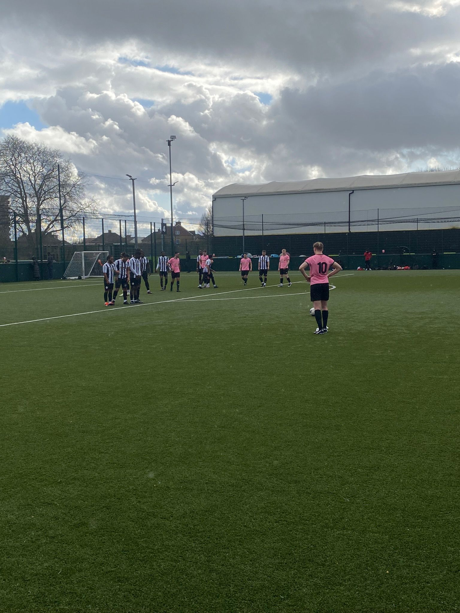

Match Report - Barnet Borough (A)
AFC Roza were back in action on Sunday, hoping that last week’s cancellation would not disrupt the strong run of form that we had been in over recent weeks. Although this was an away fixture, Barnet Borough are one of the teams who share the same home pitch as Roza - so it was familiar territory in the form of Enfield Powerleague.
There were a number of high profile absentees in the Roza squad including Chris Johnson, Iddo Razin and Eric Schmidt, but the boys were at least boosted by Ben Reynolds’ return to the bench.
Starting XI: Rajan Ranu; Rees Colgan, Andrew Michael, Giorgio Koullas, Jake Koumi; Michael Georgiades, Danny Smith, Saj Rajaratnam; Cal Cook, Steph Savva, Alex Andreou
Eager to prove our ability against a team in the league above, Roza started strongly, and looked the more dangerous of the teams in the early stages. Midfield dominance and effective high pressing meant that we had settled in well, controlling the game and looking confident.
Our strong start soon manifested itself in the opening goal. Steph Savva was played through on the right side of the box and, from a tight angle, hit a ferocious shot which was saved onto the post - before Cal Cook bundled home the rebound with a determined press. The American just simply wanted it more than the opposition.
Moments later, Roza were turning the screw and thought they were two ahead. A cross from the left side was fumbled by Barnet Borough’s goalkeeper, and Saj Rajaratnam tapped in the second - only to be ruled out for offside. It was certainly a close one and Roza were unlucky not to double their lead.
Within a minute of the ball being in the opposition’s net for what we thought was a 0-2 lead, it was 1-1. Barnet Borough took the subsequent free-kick quickly, slicing through Roza’s shape far too easily, before their right winger slotted one home across Rajan Ranu. A momentary loss of focus cost Roza, and the lead was cancelled.
Shortly after though, the one goal lead was restored when Cal Cook once again displayed excellent tenacity. This time, he closed down the opposition goalkeeper who was taking his time on the ball, blocking his clearance into the back of the net. Cook is clearly keen to take the Roza Golden Boot this season, and his attitude is certainly firing himself towards that.
With Roza 2-1 up and looking solid, it was a surprise when Barnet Borough once again equalised around half an hour into the game. A defensive lapse meant that they broke through and scored another, continuing their clinical display.
It looked as if it would be 2-2 going into the break; but Roza talisman Danny Smith had other ideas. Our number 10 picked the ball up in the middle of the park, around 20 yards out, opening his body to curl one into the top right-hand corner. It was a moment of finesse and quality from Smith, who had an excellent game all-round, patrolling the centre of the midfield. His strike meant that 3-2 was the half-time scoreline, in an exciting and ultimately positive first half.
With the scoreline reading 3-2, it could’ve been more if we were clinical. There were a number of half-chances, but at least we led at the break.

Unfortunately, the second half was a different story. Rather than pushing on and continuing to create chances, Barnet Borough were looking the more likely and Roza started to look disjointed in attack. The pattern of play was concerning and something had to be done, so manager Mike Anastasiou called for Ben Reynolds off the bench, but this did not stop the home side finding the net, and making it 3-3. For the third time, the away side had squandered a lead.
The tide was firmly with the home team with half an hour to go. Deano Spyrou entered the fray to help solidify the back line, but not much could be done when an outrageous strike from Barnet Borough found the top right corner of the Roza net, tapping the bar before going over the line. For the first time, we were behind.
The last 25 minutes was mainly Roza pressure, with the home side opting to time waste in the corner and send the ball long where possible. With 10 minutes to go, Rees Colgan found himself with a chance in the centre of the box, and his half-volley smashed the underside of the bar, somehow staying out. A succession of Roza corners caused danger with the ball pinballing around the penalty area, but it just would not go in.
Sunday’s game was a tough one to take and summed up our poor form in cup competitions this season. We now have four matches remaining in the league, all away from home, where we will try to secure a top 3 finish.
Onwards and Upwards.